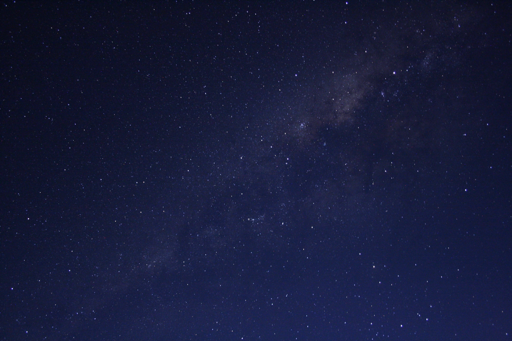

Postdoctoral Researcher
Dr Giulia Ballabio
UCL Hospital NHS Foundation Trust & University of Liverpool
Theoretical astrophysicist with extensive experience in computational modelling, data analysis, and programming, now applying these skills to healthcare innovation. Currently applying these methods to healthcare, leveraging large-scale datasets to study treatment efficacy, drug safety, and precision medicine.
Publications
2025
READ
Using EUV driven external photoevaporation to test viscous evolution of protoplanetary discs
MNRAS
2025
READ
Understanding helium absorption in atmospheric escape
MNRAS
2024
READ
Modelling JWST MIRI-MRS Observations of T Cha: Mid-IR Noble Gas Emission Tracing a Dense Disk Wind
AJ
2023
READ
[OI] 6300 Å emission as a probe of external photoevaporation
MNRAS
2021
READ
HD 143006: circumbinary planet or misaligned disc?
MNRAS
2020
READ
The Evolution of Disk Winds from a Combined Study of Optical and Infrared Forbidden Lines
ApJ
2020
READ
Forbidden line diagnostics of photoevaporative disc winds
MNRAS
Expertise
Programming & Data Science
Python, R, Git, Fortran, C, Bash
Big data workflows, HPC environments
Domain Knowledge
Healthcare data: pharmacology, epidemiology
Astrophysics: modelling, simulations
